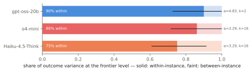
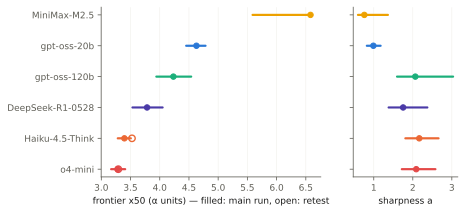
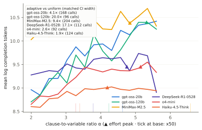

That was the plan. Instead, every experiment complicated the number in a different way — and one experiment was the consolation prize that makes the whole thing usable. The six findings below are one story: what a "breaking point" actually is once you look closely.
When a model fails a puzzle at its breaking point, why? Two candidate stories: the puzzle was secretly harder than its difficulty setting suggests — or the model is genuinely a coin-flip there, and the same puzzle passes on one attempt and fails on the next. We ran every frontier puzzle 16 times to find out.
81 per cent of the variation is the coin-flip kind. The frontier is mist, not a wall — which means retrying a failed problem near the frontier genuinely helps, and that is exactly where retry budgets earn their keep.

So a breaking point is a coin-flip zone, not a line. Fine — but is it at least a stable zone? Measure twice, get the same answer?
A measurement you can't repeat is a rumour. So we measured everything twice — fresh puzzles, fresh attempts — and checked that the numbers came back the same.
They did: split-half reliability r = 0.99 across models, and the two models re-tested in full repeated their breaking points to within 0.02 and 0.12 dial units (open vs filled markers below). Post-fix probes re-checked the rest: o4-mini 3.28→3.20 ✓; gpt-oss-120b 4.24→4.41 ✓; DeepSeek-R1 3.78→3.77 ✓.
The exception is its own finding: gpt-oss-20b read 4.63 in the afternoon and 3.58 ± 0.10 the same evening on the same pinned endpoint — the served model changed under the label. Both readings are reported. The instrument repeats; the thing being measured is not obliged to. Form guides expire; a $0.36 probe (finding 4) is enough to notice.

The instrument repeats; the world drifts. And both of those assumed the models could think as long as they liked. They can't — thinking is metered —
Reasoning models bill you for their "thinking" tokens, and they think hardest near their own breaking point — effort climbs as puzzles approach the frontier, peaks just past it, then sags as the model gives up. You can locate a model's cliff from billing metadata alone.

And the budget doesn't just reveal the frontier — it moves it. We found this by accident: fixing a router bug (finding 6) made token limits enforced on routes that had ignored them, silently re-running MiniMax's measurement with one variable changed. Uncapped, MiniMax's breaking point is 6.58 — top of the sweep card. Capped at 32k tokens it collapses to ≈3.6 (56 of 108 calls died at the token wall mid-thought). At n = 50, even 64k wasn't enough (0/17). Its long grinds aren't a quirk — they are the capability. Three models now span the spectrum: GPT-5.5 budget-efficient (frontier intact under 32k), MiniMax budget-elastic (frontier moves three dial units with the cap), Fable budget-insatiable (out-thinks 64k). A frontier is not one number — it is a curve against the thinking budget, and a datasheet should state the budget it was measured at.
Distributions, drift, budget curves — measuring all this properly sounds ruinously expensive. Here is the consolation prize:
Testing every difficulty level thoroughly is the expensive way to find a breaking point. The cheap way is a binary search: try a middling difficulty, jump harder after a success, easier after a failure, then home in.
The search recovers the frontier with 6.8× fewer model calls than uniform testing at the same precision — proved live: it found Haiku's frontier in 20 calls ($1.03) and o4-mini's in 84 ($4.62), matching their 600–980-call sweeps.
The same procedure then became the campaign's workhorse: it audited every card row (finding 2's clean bill), priced the premium late entries, and ran the head-to-head duels. Those duels are their own short story: at 20 variables Fable and GPT-5.5 tie — both beyond the hardest generatable puzzle (Fable went 42/45 vs GPT-5.5's 29/29 on identical instances). On the bigger 50-variable track, GPT-5.5 separates: 13/21 with zero truncations while Fable converted 11/40, out-thinking even 64k-token budgets on half its calls (though slightly the more accurate, 11/16, when it finished) and MiniMax — king of the small track — went 0/17. Per-track frontiers, per-budget frontiers: the card is a snapshot, not a soul.
We sent the search back to pin where MiniMax's big-track frontier actually sits, and learned the answer in two instalments. First the pipe: through a standard ten-minute read window, nothing ships — at α 3.9 every response outlived the socket (eight retries, 103 minutes, nothing delivered) and the search starved to death. Widen the window to thirty minutes and the answers arrive — averaging 1,791 seconds and 49,000 thinking tokens each, on the very same provider. Then the capability: even delivered, MiniMax converted 3 of 12 at α 3.0–3.6, the easiest end of the big track (one call still died at the 64k token wall). So its 50-variable frontier sits at or below α 3 — more than three dial units under its small-track crown of 6.58 — and merely reaching it costs half an hour of silence per question. Somewhere below "too hard" sits too long to ship, and this model lives between the two.
The probe works by counting thinking tokens. Which raises a question: could reading the thinking do even better?
The story continues in finding 5 (traces) and finding 6 (the pipes).
Six findings, one sentence: a model's breaking point is not a constant — it is a coin-flip zone (1), measured on a date (2), at a thinking budget (3), on one task family (F), through a particular pipe (6) — and the only reason any of that is workable is that re-measuring costs pocket change (4), with the model's own stutter as a second opinion where the pipe allows (5). The card above states its family, budgets, dates, and pipes. Any capability number that doesn't is a rumour with confidence intervals missing.